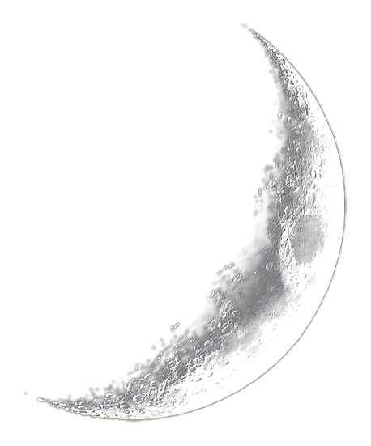
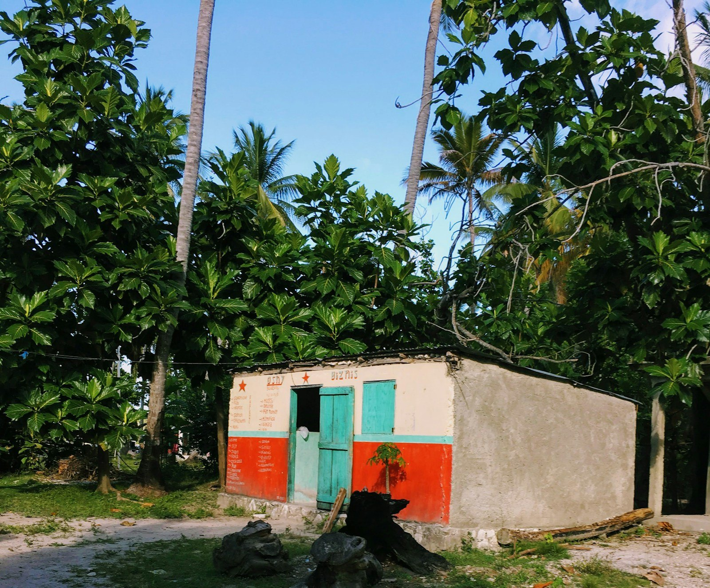
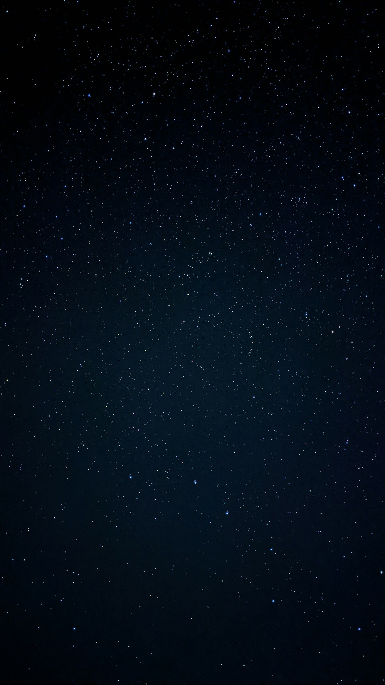
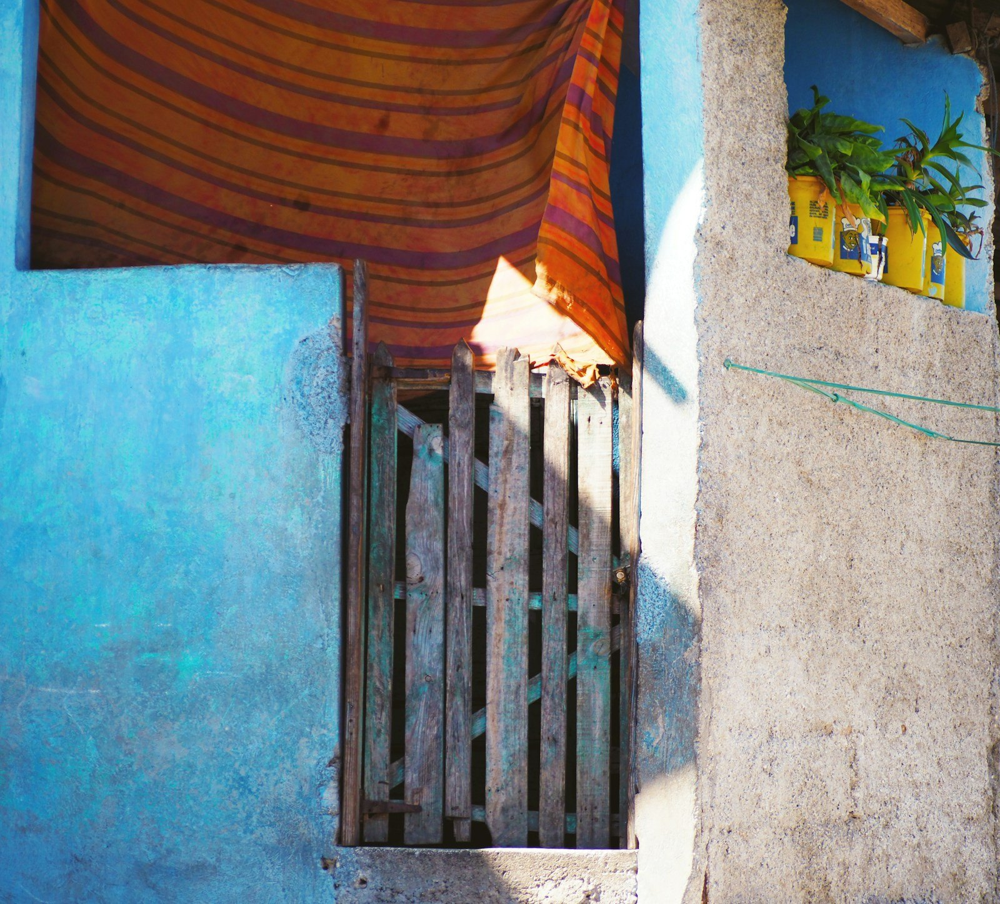
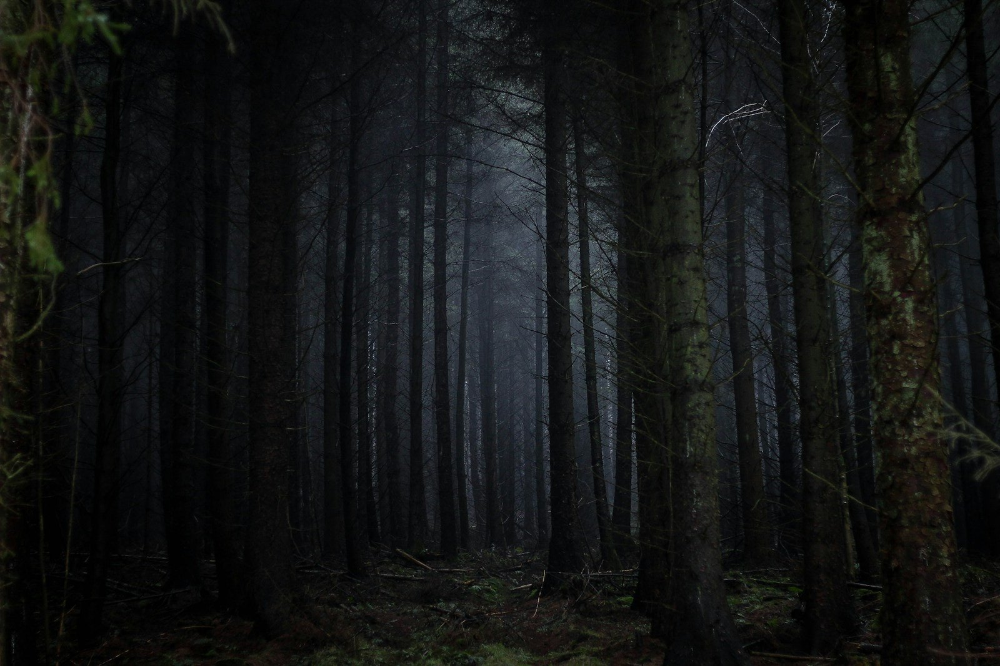
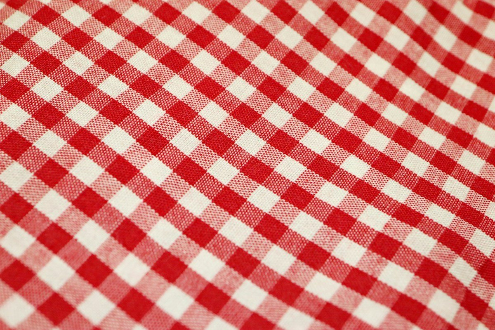
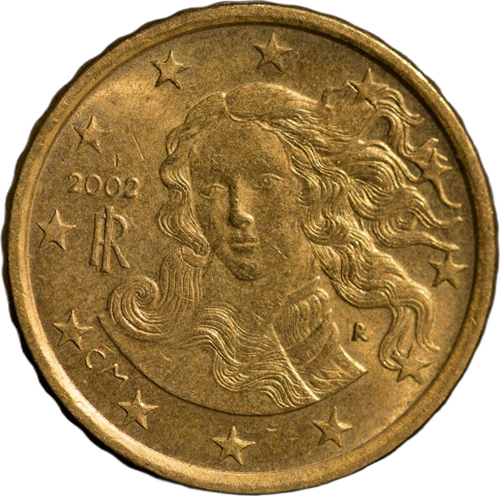
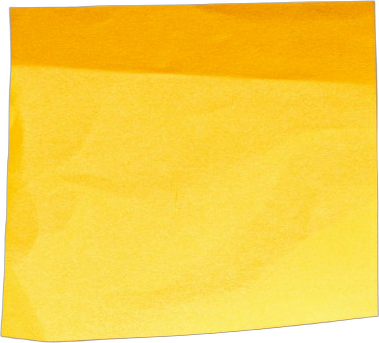

LANNWIT


IL EST18:00
JAMAIS LA NUIT
Pa bale lannwit !
REC 00:00:00:00
HAÏTI · N° 1
CHANCE

LA CHANCE
APRÈS LE COUCHER DU SOLEIL
LISTE
TIMOUN
N° 2
ZZZ…
STOP
CHODYÈ

N° 3
MARIAGE
PAPIYON

N° 4
« PAPIYON NWA » · ASCALAPHA ODORATA
SILANS


N° 5
Ti Jo !
Wi ?
LESPRI

N° 6
♪ ♫ ♪
PA SIFLE
CHOFRET

N° 7
CHAUDFROID
LAJAN
N° 8
LORAJ


N° 9
DYAB
N° 10
SOLÈY
+ LAPLI
« SE DYAB LA K AP BAT MADANM LI »
ZONG
N° 11
PA LANNWIT
GRANN

ÉCRIT NULLE PART
AFRIQUE
+ VIEILLE FRANCE
= HAÏTI
DE BOUCHE À OREILLE
BON SENS

PÈSONN
J'y crois pas !
1Balayer2Enjamber3Marmite4Papillon5Appel6Siffler7Repasser8Paume9Miroirs10Diable11Ongles

On me répétait :
Répondez ici
CULTURE D'HAÏTI · CROYANCES